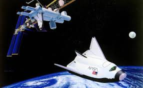

AERODYNAMIC STUDY OF HL-20 DESIGN MODIFICATION
ABSTRACT
The goal was to carry out in-depth research and study quotients that could fetch a quick accessible database for a multitude of space vehicles. This was followed by narrowing down to a single vehicle and coming up with a conceptualised design iteration that could fulfil analysis criterions and ultimately prove to be efficient over the conventional design. The aim of this Internship, apart from familiarizing with Flying Wing and Lifting Body Designs, was to develop and propose a design optimization idea, which turned out to be in the form of retractable wing configuration over the conventional HL-20 design. The wing extension is needed to provide a larger surface area during re-entry thereby increasing the lift and reducing the ballistic coefficient of the spacecraft. If that has made you scratch your head, step ahead and download the pdf for an in-depth thorough study of our work.